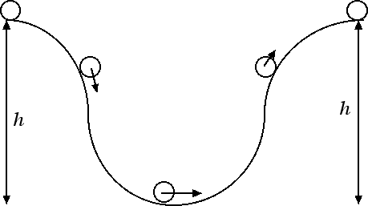

Conservazione dell'energia
Energia e attrito
Se non ci fossero attriti un corpo che si muove a velocità v su un piano orizzontale, e che possiede perciò energia meccanica Em = K = m v2 / 2, conserverebbe la sua energia cinetica e continuerebbe a muoversi a velocità v. Nella realtà noi sappiamo che un corpo rallenta progressivamente fino a fermarsi. Questo fenomeno è dovuto all'attrito che comporta un lavoro negativo proporzionale allo spostamento e alla forza-peso dell'oggetto: L = - kD m g s. Dal teorema dell'energia cinetica ricaviamo che la variazione dell'energia cinetica è uguale al lavoro fatto dalle forze d'attrito: ΔK = L < 0. Questo vuol dire che, se ci sono attriti, il corpo perde energia cinetica e, visto che non ci sono altre forme di energia, perde anche energia meccanica, man mano che si sposta.
Supponiamo invece di prendere una biglia che rotola sul profilo indicato in figura. Se lasciamo cadere la biglia da una certa altezza h in base al principio di conservazione dell'energia meccanica ci aspettiamo che la biglia converta la sua energia potenziale gravitazionale in energia cinetica scendendo di altezza per poi riconvertire tutta l'energia cinetica in energia potenziale gravitazionale risalendo lungo il profilo. Se l'energia meccanica si conserva l'energia potenziale gravitazionale che abbiamo all'inizio la ritroviamo alla fine e pertanto ci aspettiamo di ritrovare la pallina dalla parte opposta del profilo ma alla stessa altezza.

Dalla nostra esperienza invece sappiamo che in realtà la biglia raggiunge un'altezza leggermente minore. La ragione è la seguente: abbiamo più volte ripetuto che il principio di conservazione dell'energia vale in assenza di attrito. Nella vita reale gli attriti ci sono e dunque parte dell'energia meccanica viene persa per attrito e si trasforma, come vedremo, in energia termica, ossia in calore. Pertanto la variazione di energia meccanica, che è uguale al lavoro fatto dalle forze d'attrito, è pari a: ΔEm = - k · m · g · s. Il segno meno ci conferma che il corpo perde parte della sua energia meccanica che viene convertita in energia termica, ossia calore.
Se includiamo però nel bilancio energetico anche il calore e le altre possibili forme di energia (nucleare, elettrica, ...) avremo che l'energia totale del sistema, data dalla somma di tutte le possibili forme di energia, si conserva. In definitiva, l'energia si può trasformare da una forma all'altra, ma non si può né creare né distruggere.
Quesito: Un ciclista di massa m = 65 kg si sta muovendo a v = 30 km / h su una strada rettilinea. Il ciclista a un certo punto smette di pedalare. Quanta strada riesce a percorrere prima di fermarsi se il coefficiente d'attrito tra le ruote della sua bici e l'asfalto vale k = 0.1?
Risposta: L'energia meccanica in questo caso è tutta energia cinetica: Em = 1/2 m v2. La velocità v va convertita nel Sistema Internazionale: v = 30 km / h = 30 / 3.6 m / s = 8.33 m / s. L'energia meccanica iniziale del ciclista è pertanto Em = 0.5 · 65 · 8.332 = 2255 J. Quando il ciclista si ferma ha perso tutta la sua energia meccanica a causa delle forze d'attrito, dunque la variazione di energia meccanica coincide con l'energia meccanica iniziale cambiata di segno: ΔE = - 2255 J. Questa variazione è dovuta al lavoro fatto dalle forze d'attrito. Avremo perciò - k · m · g · s = ΔE da cui lo spostamento che riesce a fare il ciclista prima di fermarsi è s = - ΔE / (k · m · g) = 2255 / (0.1 · 65 · 9.8) m = 35.4 m.